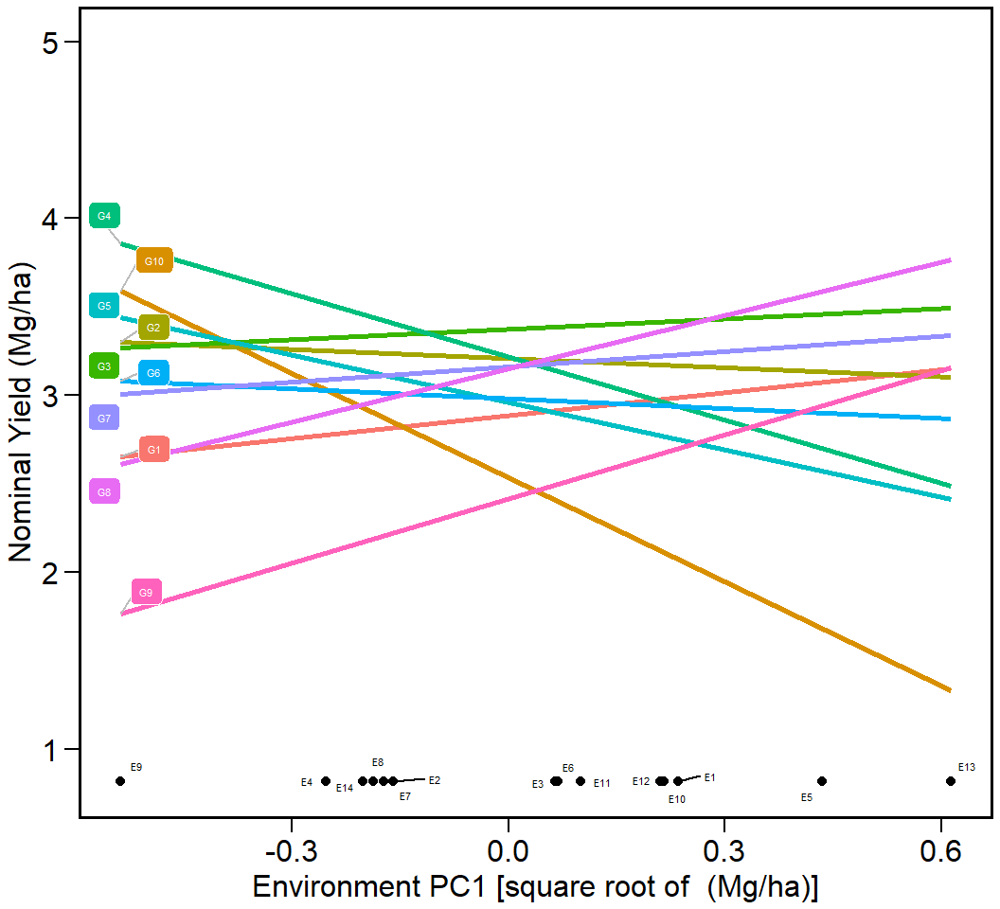

Analyzing multienvironment trials using BLUP
Tiago Olivoto
2020-01-14
Source:vignettes/vignettes_blup.Rmd
vignettes_blup.RmdGetting started
In this section, we will use the data in data_ge. For more information, please, see ?data_ge. Other data sets can be used provided that the following columns are in the dataset: environment, genotype, block/replicate and response variable(s). The R package DT was used to produce the tables of this vignette.
library(metan)
library(DT) # Used to make the tables
# Function to make HTML tables
print_table <- function(table, rownames = FALSE, ...){
datatable(table, rownames = rownames, extensions = 'Buttons',
options = list(dom = '<<t>Bp>', buttons = c('copy', 'excel', 'pdf', 'print')), ...) %>%
formatSignif(columns = c(1:ncol(table)), digits = 3)}The first step is to inspect the data with the function inspect().

Analysis of single experiments using mixed-models
The function gamem() may be used to analyze single experiments (one-way experiments) using a mixed-effect model according to the following model:
\[
y_{ij}= \mu + \alpha_i + \tau_j + \varepsilon_{ij}
\] where \(y_{ij}\) is the value observed for the ith genotype in the jth replicate (i = 1, 2, … g; j = 1, 2, .., r); being g and r the number of genotypes and replicates, respectively; \(\alpha_i\) is the random effect of the ith genotype; \(\tau_j\) is the fixed effect of the jth replicate; and \(\varepsilon_{ij}\) is the random error associated to \(y_{ij}\). In this example, we will use the example data data_g from metan package.
Evaluating variable ED 0 %
Evaluating variable CL 20 %
Evaluating variable CD 40 %
Evaluating variable KW 60 %
Evaluating variable TKW 80 %
Evaluating variable NKR 100 %
------------------------------------------------------------
Variables with nonsignificant genotype effect
CD NKR
------------------------------------------------------------
Done!The easiest way of obtaining the results of the model above is by using the function get_model_data(). Let’s do it.
- Details of the analysis
- Likelihood ratio test for genotype effect
- Variance components and genetic parameters
- Predicted means
In the above example, the experimental design was a complete randomized block. It is also possible to analyze an experiment conducted in an alpha-lattice design with the function gamem(). In this case, the following model is fitted:
\[ y_{ijk}= \mu + \alpha_i + \gamma_j + (\gamma \tau)_{jk} + \varepsilon_{ijk} \]
where \(y_{ijk}\) is the observed value of the ith genotype in the kth block of the jth replicate (i = 1, 2, … g; j = 1, 2, .., r; k = 1, 2, .., b); respectively; \(\alpha_i\) is the random effect of the ith genotype; \(\gamma_j\) is the fixed effect of the jth complete replicate; \((\gamma \tau)_{jk}\) is the random effect of the kth incomplete block nested within the j replicate; and \(\varepsilon_{ijk}\) is the random error associated to \(y_{ijk}\). In this example, we will use the example data data_alpha from metan package.
Done!The BLUP model for MET trials
The simplest and well-known linear model with interaction effect used to analyze data from multi-environment trials is \[ {y_{ijk}} = {\rm{ }}\mu {\rm{ }} + \mathop \alpha \nolimits_i + \mathop \tau \nolimits_j + \mathop {(\alpha \tau )}\nolimits_{ij} + \mathop \gamma \nolimits_{jk} + {\rm{ }}\mathop \varepsilon \nolimits_{ijk} \]
where \({y_{ijk}}\) is the response variable (e.g., grain yield) observed in the kth block of the ith genotype in the jth environment (i = 1, 2, …, g; j = 1, 2, …, e; k = 1, 2, …, b); \(\mu\) is the grand mean; \(\mathop \alpha \nolimits_i\) is the effect of the ith genotype; \(\mathop \tau \nolimits_j\) is the effect of the jth environment; \(\mathop {(\alpha \tau )}\nolimits_{ij}\) is the interaction effect of the ith genotype with the jth environment; \(\mathop \gamma \nolimits_{jk}\) is the effect of the kth block within the jth environment; and \(\mathop \varepsilon \nolimits_{ijk}\) is the random error. In a mixed-effect model assuming \({\alpha _i}\) and \(\mathop {(\alpha \tau )}\nolimits_{ij}\) to be random effects, the above model can be rewritten as follows
\[ {\boldsymbol{y = X\beta + Zu + \varepsilon }} \]
where y is an \(n[ = \sum\nolimits_{j = 1}^e {(gb)]} \times 1\) vector of response variable \({\bf{y}} = {\rm{ }}{\left[ {{y_{111}},{\rm{ }}{y_{112}},{\rm{ }} \ldots ,{\rm{ }}{y_{geb}}} \right]^\prime }\); \({\bf{\beta }}\) is an \((eb) \times 1\) vector of unknown fixed effects \({\boldsymbol{\beta }} = [\mathop \gamma \nolimits_{11} ,\mathop \gamma \nolimits_{12} ,...,\mathop \gamma \nolimits_{eb} ]'\); u is an \(m[ = g + ge] \times 1\) vector of random effects \({\boldsymbol{u}} = {\rm{ }}{\left[ {{\alpha _1},{\alpha _2},...,{\alpha _g},\mathop {(\alpha \tau )}\nolimits_{11} ,\mathop {(\alpha \tau )}\nolimits_{12} ,...,\mathop {(\alpha \tau )}\nolimits_{ge} } \right]^\prime }\); X is an \(n \times (eb)\) design matrix relating y to \({\bf{\beta }}\); Z is an \(n \times m\) design matrix relating y to u ; \({\boldsymbol{\varepsilon }}\) is an \(n \times 1\) vector of random errors \({\boldsymbol{\varepsilon }} = {\rm{ }}{\left[ {{y_{111}},{\rm{ }}{y_{112}},{\rm{ }} \ldots ,{\rm{ }}{y_{geb}}} \right]^\prime }\);
The vectors \({\boldsymbol{\beta }}\) and u are estimated using the well-known mixed model equation (Henderson 1975). \[ \left[ {\begin{array}{*{20}{c}}{{\boldsymbol{\hat \beta }}}\\{{\bf{\hat u}}}\end{array}} \right]{\bf{ = }}{\left[ {\begin{array}{*{20}{c}}{{\bf{X'}}{{\bf{r }}^{ - {\bf{1}}}}{\bf{X}}}&{{\bf{X'}}{{\bf{r }}^{ - {\bf{1}}}}{\bf{Z}}}\\{{\bf{Z'}}{{\bf{r }}^{ - {\bf{1}}}}{\bf{X}}}&{{\bf{Z'}}{{\bf{r }}^{ - {\bf{1}}}}{\bf{Z + }}{{\bf{G}}^{ - {\bf{1}}}}}\end{array}} \right]^ - }\left[ {\begin{array}{*{20}{c}}{{\bf{X'}}{{\bf{r }}^{ - {\bf{1}}}}{\bf{y}}}\\{{\bf{Z'}}{{\bf{r }}^{ - {\bf{1}}}}{\bf{y}}}\end{array}} \right] \] where G and R are the variance-covariance matrices for random-effect vector u and residual vector \({\bf{\varepsilon }}\), respectively.
The waasb() is used to fit the linear mixed-effect model. The first argument is the data, in our example data_ge. By default, genotype and genotype-vs-environment interaction are assumed to be random effects. Other effects may be considered using the random argument. Please, see ?WAASB for more details. The argument (resp) is the response variable to be analyzed. The function allow a single variable (in this case GY) or a vector of response variables. The arguments (gen, env, and rep) are the name of the columns that contains the levels for genotypes, environments, and replications, respectively. The last argument (verbose) control if the code is run silently or not.
WAASB_model <- waasb(data_ge,
env = ENV,
gen = GEN,
rep = REP,
resp = GY,
random = "gen", #Default
verbose = TRUE) #DefaultAll variables with significant (p < 0.05) genotype-vs-environment interaction
Done!Diagnostic plot for residuals
The S3 generic function plot() is used to generate diagnostic plots of residuals of the model. The normality of the random effects of genotype and interaction effects may be also obtained by using type = "re".


Printing the model outputs
Likelihood Ratio Tests
The output LRT contains the Likelihood Ratio Tests for genotype and genotype-vs-environment random effects.
Variance components and genetic parameters
In the output ESTIMATES, beyond the variance components for the declared random effects, some important parameters are also shown. Heribatility is the broad-sense heritability, \(\mathop h\nolimits_g^2\), estimated by \[
\mathop h\nolimits_g^2 = \frac{\mathop {\hat\sigma} \nolimits_g^2} {\mathop {\hat\sigma} \nolimits_g^2 + \mathop {\hat\sigma} \nolimits_i^2 + \mathop {\hat\sigma} \nolimits_e^2 }
\]
where \(\mathop {\hat\sigma} \nolimits_g^2\) is the genotypic variance; \(\mathop {\hat\sigma} \nolimits_i^2\) is the genotype-by-environment interaction variance; and \(\mathop {\hat\sigma} \nolimits_e^2\) is the residual variance.
GEIr2 is the coefficient of determination of the interaction effects, \(\mathop r\nolimits_i^2\), estimated by
\[ \mathop r\nolimits_i^2 = \frac{\mathop {\hat\sigma} \nolimits_i^2} {\mathop {\hat\sigma} \nolimits_g^2 + \mathop {\hat\sigma} \nolimits_i^2 + \mathop {\hat\sigma} \nolimits_e^2 } \] Heribatility of means is the heribability on the mean basis, \(\mathop h\nolimits_{gm}^2\), estimated by
\[ \mathop h\nolimits_{gm}^2 = \frac{\mathop {\hat\sigma} \nolimits_g^2}{[\mathop {\hat\sigma} \nolimits_g^2 + \mathop {\hat\sigma} \nolimits_i^2 /e + \mathop {\hat\sigma} \nolimits_e^2 /\left( {eb} \right)]} \]
where e and b are the number of environments and blocks, respectively; Accuracy is the accuracy of selection, Ac, estimated by \[ Ac = \sqrt{\mathop h\nolimits_{gm}^2} \]
rge is the genotype-environment correlation, \(\mathop r\nolimits_{ge}\), estimated by
\[ \mathop r\nolimits_{ge} = \frac{\mathop {\hat\sigma} \nolimits_g^2}{\mathop {\hat\sigma} \nolimits_g^2 + \mathop {\hat\sigma} \nolimits_i^2} \]
CVg and CVr are the the genotypic coefficient of variation and the residual coefficient of variation estimated, respectively, by \[ CVg = \left( {\sqrt {\mathop {\hat \sigma }\nolimits_g^2 } /\mu } \right) \times 100 \] and \[ CVr = \left( {\sqrt {\mathop {\hat \sigma }\nolimits_e^2 } /\mu } \right) \times 100 \] where \(\mu\) is the grand mean.
CV ratio is the ratio between genotypic and residual coefficient of variation.
Some useful information
The following pieces of information are provided in Details output. WgtResponse is the weight for the response variable in estimating WAASB; WgtWAAS is the weight for stability; Ngen is the number of genotypes; Nenv is the number of environments; OVmean is the overall mean; Min is the minimum value observed (returning the genotype and environment); Max is the maximum observed; MinENV is the environment with the lower mean; MaxENV is the environment with the largest mean observed; MinGEN is the genotype with the lower mean; MaxGEN is the genotype with the largest mean.
The WAASB object
The waasb() function computes the Weighted Average of the Absolute Scores considering all possible IPCA from the Singular Value Decomposition of the BLUPs for genotype-vs-environment interaction effects obtained by an Linear Mixed-effect Model (Olivoto et al. 2019), as follows:
\[ WAASB_i = \sum_{k = 1}^{p} |IPCA_{ik} \times EP_k|/ \sum_{k = 1}^{p}EP_k \]
where \(WAASB_i\) is the weighted average of absolute scores of the ith genotype; \(IPCA_{ik}\) is the scores of the ith genotype in the kth IPCA; and \(EP_k\) is the explained variance of the kth PCA for \(k = 1,2,..,p\), \(p = min(g-1; e-1)\).
The output generated by the waasb() function is very similar to those generated by the waas() function. The main difference here, is that the singular value decomposition is based on the BLUP for GEI effects matrix.
BLUP for genotypes
The function get_model_data() may be used to easily get the data from a model fitted with the function waasb(), especially when more than one variables are used. The following code return the predicted mean of each genotype for five variables of the data data_ge2.
waasb(data_ge2, ENV, GEN, REP,
resp = c(PH, ED, TKW, NKR, CD)) %>%
get_model_data(what = "blupg") %>%
print_table()Evaluating variable PH 0 %
Evaluating variable ED 25 %
Evaluating variable TKW 50 %
Evaluating variable NKR 75 %
Evaluating variable CD 100 %
All variables with significant (p < 0.05) genotype-vs-environment interaction
Done!Plotting the BLUP for genotypes
library(ggplot2)
a <- plot_blup(WAASB_model)
b <- plot_blup(WAASB_model,
col.shape = c("gray20", "gray80"),
plot_theme = theme_metan(grid = "y")) +
coord_flip()
arrange_ggplot(a, b, labels = letters[1:2])
This output shows the predicted means for genotypes. BLUPg is the genotypic effect \((\hat{g}_{i})\), which considering balanced data and genotype as random effect is estimated by
\[ \hat{g}_{i} = h_g^2(\bar{y}_{i.}-\bar{y}_{..}) \]
where \(h_g^2\) is the shrinkage effect for genotype. Predicted is the predicted mean estimated by \[ \hat{g}_{i}+\mu \]
where \(\mu\) is the grand mean. LL and UL are the lower and upper limits, respectively, estimated by \[ (\hat{g}_{i}+\mu)\pm{CI} \] with \[ CI = t\times\sqrt{((1-Ac)\times{\mathop \sigma \nolimits_g^2)}} \]
where \(t\) is the Student’s t value for a two-tailed t test at a given probability error; \(Ac\) is the accuracy of selection and \(\mathop \sigma \nolimits_g^2\) is the genotypic variance.
BLUP for genotypes X environment combination
This output shows the predicted means for each genotype and environment combination. BLUPg is the genotypic effect described above. BLUPge is the genotypic effect of the ith genotype in the jth environment \((\hat{g}_{ij})\), which considering balanced data and genotype as random effect is estimated by \[\hat{g}_{ij} = h_g^2(\bar{y}_{i.}-\bar{y}_{..})+h_{ge}^2(y_{ij}-\bar{y}_{i.}-\bar{y}_{.j}+\bar{y}_{..})\] where \(h_{ge}^2\) is the shrinkage effect for the genotype-by-environment interaction; BLUPg+ge is \(BLUP_g+BLUP_{ge}\); Predicted is the predicted mean (\(\hat{y}_{ij}\)) estimated by \[ \hat{y}_{ij} = \bar{y}_{.j}+BLUP_{g+ge} \]
Eigenvalues of the BLUP_GEI matrix

The above output shows the eigenvalues and the proportion of variance explained by each principal component axis of the BLUP interaction effects matrix.
Biplots
Provided that an object of class waasb is available in the global environment, the graphics may be obtained using the function plot_scores(). To do that, we will revisit the previusly fitted model WAASB . Please, refer to ?plot_scores for more details. Four types of graphics can be generated: 1 = \(PC1 \times PC2\); 2 = \(GY \times PC1\); 3 = \(GY \times WAASB\); and 4 = a graphic with nominal yield as a function of the environment PCA1 scores.
biplot type 1: PC1 x PC2
c <- plot_scores(WAASB_model, type = 1)
d <- plot_scores(WAASB_model,
type = 1,
col.gen = "black",
col.env = "red",
col.segm.env = "red",
axis.expand = 1.5)
arrange_ggplot(c, d, labels = letters[3:4])
biplot type 2: GY x PC1
e <- plot_scores(WAASB_model, type = 2)
f <- plot_scores(WAASB_model,
type = 2,
polygon = TRUE,
col.segm.env = "transparent",
plot_theme = theme_metan_minimal())
arrange_ggplot(e, f, labels = letters[5:6])
biplot type 3: GY x WAASB
The quadrants proposed by Olivoto et al. (2019) in the following biplot represent four classifications regarding the joint interpretation of mean performance and stability. The genotypes or environments included in quadrant I can be considered unstable genotypes or environments with high discrimination ability, and with productivity below the grand mean. In quadrant II are included unstable genotypes, although with productivity above the grand mean. The environments included in this quadrant deserve special attention since, in addition to providing high magnitudes of the response variable, they present a good discrimination ability. Genotypes within quadrant III have low productivity, but can be considered stable due to the lower values of WAASB. The lower this value, the more stable the genotype can be considered. The environments included in this quadrant can be considered as poorly productive and with low discrimination ability. The genotypes within the quadrant IV are highly productive and broadly adapted due to the high magnitude of the response variable and high stability performance (lower values of WAASB).
g <- plot_scores(WAASB_model, type = 3)
h <- plot_scores(WAASB_model, type = 3,
x.lab = "My customized x label",
size.shape = 3,
size.tex.pa = 2,
x.lim = c(1.2, 4.7),
x.breaks = seq(1.5, 4.5, by = 0.5),
plot_theme = theme_metan(color.background = "white"))
arrange_ggplot(g, h, labels = letters[7:8])
To obtain the WAASB index for a set of variables, the function get_model_data() is used, as shown bellow.
waas(data_ge2, ENV, GEN, REP,
resp = c(PH, ED, TKW, NKR)) %>%
get_model_data(what = "WAASB") %>%
print_table()variable PH
---------------------------------------------------------------------------
AMMI analysis table
---------------------------------------------------------------------------
Source Df Sum Sq Mean Sq F value Pr(>F) Percent Accumul
ENV 3 7.719 2.5728 127.913 4.25e-07 . .
REP(ENV) 8 0.161 0.0201 0.897 5.22e-01 . .
GEN 12 1.865 0.1554 6.929 6.89e-09 . .
ENV:GEN 36 5.397 0.1499 6.686 5.01e-14 . .
PC1 14 4.466 0.3190 14.230 0.00e+00 82.8 82.8
PC2 12 0.653 0.0545 2.430 8.40e-03 12.1 94.9
PC3 10 0.277 0.0277 1.240 2.76e-01 5.1 100
Residuals 96 2.153 0.0224 NA NA . .
Total 155 17.294 0.1116 NA NA . .
---------------------------------------------------------------------------
variable ED
---------------------------------------------------------------------------
AMMI analysis table
---------------------------------------------------------------------------
Source Df Sum Sq Mean Sq F value Pr(>F) Percent Accumul
ENV 3 306.0 101.99 43.386 2.70e-05 . .
REP(ENV) 8 18.8 2.35 0.906 5.15e-01 . .
GEN 12 212.9 17.74 6.838 8.95e-09 . .
ENV:GEN 36 398.2 11.06 4.263 7.60e-09 . .
PC1 14 212.2 15.16 5.840 0.00e+00 53.3 53.3
PC2 12 134.7 11.23 4.330 0.00e+00 33.8 87.1
PC3 10 51.3 5.13 1.980 4.38e-02 12.9 100
Residuals 96 249.1 2.59 NA NA . .
Total 155 1185.0 7.64 NA NA . .
---------------------------------------------------------------------------
variable TKW
---------------------------------------------------------------------------
AMMI analysis table
---------------------------------------------------------------------------
Source Df Sum Sq Mean Sq F value Pr(>F) Percent Accumul
ENV 3 37013 12338 11.13 3.16e-03 . .
REP(ENV) 8 8869 1109 1.21 3.03e-01 . .
GEN 12 44633 3719 4.05 4.41e-05 . .
ENV:GEN 36 164572 4571 4.98 1.73e-10 . .
PC1 14 104276 7448 8.11 0.00e+00 63.4 63.4
PC2 12 33361 2780 3.03 1.20e-03 20.3 83.6
PC3 10 26935 2694 2.93 3.00e-03 16.4 100
Residuals 96 88171 918 NA NA . .
Total 155 343257 2215 NA NA . .
---------------------------------------------------------------------------
variable NKR
---------------------------------------------------------------------------
AMMI analysis table
---------------------------------------------------------------------------
Source Df Sum Sq Mean Sq F value Pr(>F) Percent Accumul
ENV 3 237.0 79.01 15.843 0.000997 . .
REP(ENV) 8 39.9 4.99 0.635 0.746348 . .
GEN 12 227.8 18.99 2.418 0.008726 . .
ENV:GEN 36 602.7 16.74 2.132 0.001839 . .
PC1 14 337.4 24.10 3.070 0.000600 56 56
PC2 12 192.2 16.02 2.040 0.028500 31.9 87.9
PC3 10 73.1 7.31 0.930 0.509500 12.1 100
Residuals 96 753.7 7.85 NA NA . .
Total 155 1861.1 12.01 NA NA . .
---------------------------------------------------------------------------
All variables with significant (p < 0.05) genotype-vs-environment interaction
Done!biplot type 4 : nominal yield and environment IPCA1
i <- plot_scores(WAASB_model, type = 4)
j <- plot_scores(WAASB_model,
type = 4,
size.tex.pa = 1.5,
color = FALSE,
col.alpha.gen = 0,
col.alpha.env = 0,
plot_theme = theme_metan(color.background = "white"))
arrange_ggplot(i, j, labels = letters[9:10])
Simultaneous selection for mean performance and stability
The waasby index is used for genotype ranking considering both the stability (waasb) and mean performance (y) based on the following model (Olivoto et al. 2019).
\[ waasby_i = \frac{{\left( {r {Y_i} \times {\theta _Y}} \right) + \left( {r {W_i} \times {\theta _W}} \right)}}{{{\theta _Y} + {\theta _W}}} \]
where \(waasby_i\) is the superiority index for the i-th genotype; \(rY_i\) and \(rW_i\) are the rescaled values (0-100) for the response variable (y) and the stability (WAAS or WAASB), respectively; \(\theta _Y\) and \(\theta_W\) are the weights for mean performance and stability, respectively.
This index was also already computed and stored into AMMI_model>GY>model. An intuitively plot may be obtained by running
i <- plot_waasby(WAASB_model)
j <- plot_waasby(WAASB_model, col.shape = c("gray20", "gray80"))
arrange_ggplot(i, j, labels = letters[9:10])
In the following example, we will apply the function wsmp() to the previously fitted model WAASB_model aiming at planning different scenarios of waasby estimation by changing the weights assigned to the stability and the mean performance.vThe number of scenarios is defined by the arguments increment. By default, twenty-one different scenarios are computed. In this case, the the superiority index waasby is computed considering the following weights: stability (waasb or waas) = 100; mean performance = 0. In other words, only stability is considered for genotype ranking. In the next iteration, the weights becomes 95/5 (since increment = 5). In the third scenario, the weights become 90/10, and so on up to these weights become 0/100. In the last iteration, the genotype ranking for WAASY or WAASBY matches perfectly with the ranks of the response variable.
Printing the model outputs
In addition, the genotype ranking depending on the number of multiplicative terms used to estimate the WAAS index is also computed.
Plotting the heat map graphics
The first type of heatmap shows the genotype ranking depending on the number of principal component axes used for estimating the WAASB index. An euclidean distance-based dendrogram is used for grouping the genotype ranking for both genotypes and principal component axes. The second type of heatmap shows the genotype ranking depending on the WAASB/GY ratio. The ranks obtained with a ratio of 100/0 considers exclusively the stability for genotype ranking. On the other hand, a ratio of 0/100 considers exclusively the productivity for genotype ranking. Four clusters are estimated (1) unproductive and unstable genotypes; (2) productive, but unstable genotypes; (3) stable, but unproductive genotypes; and (4), productive and stable genotypes.


Others BLUP-based stability indexes
Colombari Filho et al. (2013) have shown the use of three BLUP-based indexes for selecting genotypes with performance and stability. The first is the harmonic mean of genotypic values -or BLUPS- (HMGV) a stability index that considers the genotype with the highest harmonic mean across environments as the most stable, as follows:
\[ HMGV_i = \frac{1}{e}\sum\limits_{j = 1}^e {\frac{1}{{BLUP_{ij}}}} \]
The second is the relative performance of genotypic values (RPGV), an adaptability index estimated as follows:
\[ RPGV_i = \frac{1}{e}{\sum\limits_{j = 1}^e {BLUP_{ij}} /\mathop \mu \nolimits_j } \]
The third and last is the harmonic mean of relative performance of genotypic values (HMRPGV), a simultaneous selection index for stability, adaptability and mean performance, estimated as follows:
\[ HMRPGV_i = \frac{1}{e}\sum\limits_{j = 1}^e {\frac{1}{{BLUP_{ij}/{\mu _j}}}} \]
FAI-BLUP selection index
The FAI-BLUP is a multi-trait index based on factor analysis and ideotype-design recentely proposed by Rocha, Machado, and Carneiro (2018). It is based on factor analysis, when the factorial scores of each ideotype are designed according to the desirable and undesirable factors. Then, a spatial probability is estimated based on genotype-ideotype distance, enabling genotype ranking (Rocha, Machado, and Carneiro 2018).
data_ge2 %>%
waasb(ENV, GEN, REP, c(KW, NKE, PH, EH)) %>%
fai_blup(DI = c("max, max, max, min"),
UI = c("min, min, min, max"),
SI = 15) %>%
plot()Evaluating variable KW 0 %
Evaluating variable NKE 33.3 %
Evaluating variable PH 66.7 %
Evaluating variable EH 100 %
All variables with significant (p < 0.05) genotype-vs-environment interaction
Done!
-----------------------------------------------------------------------------------
Principal Component Analysis
-----------------------------------------------------------------------------------
eigen.values cumulative.var
PC1 3.14414174 78.60354
PC2 0.66041176 95.11384
PC3 0.13857767 98.57828
PC4 0.05686883 100.00000
-----------------------------------------------------------------------------------
Factor Analysis
-----------------------------------------------------------------------------------
FA1 comunalits
KW -0.9474560 0.8976729
NKE -0.7429934 0.5520392
PH -0.9429971 0.8892436
EH -0.8973216 0.8051861
-----------------------------------------------------------------------------------
Comunalit Mean: 0.7860354
-----------------------------------------------------------------------------------
FAI-BLUP index
-----------------------------------------------------------------------------------
H13 H6 H2 H5 H1 H4 H3 H8 H9 H10 H7
0.9807 0.8843 0.8413 0.8409 0.8023 0.7972 0.6222 0.2623 0.2354 0.1810 0.1163
H12 H11
0.1014 0.0780
-----------------------------------------------------------------------------------
Selection differential
-----------------------------------------------------------------------------------
Factor Xo Xs SD SDperc
KW 1 172.938867 175.182040 2.243173e+00 1.297090e+00
NKE 1 511.643590 511.643590 2.819513e-07 5.510697e-08
PH 1 2.484813 2.487051 2.238030e-03 9.006835e-02
EH 1 1.343326 1.343326 3.234146e-10 2.407567e-08
-----------------------------------------------------------------------------------
Selected genotypes
H13 H6
-----------------------------------------------------------------------------------
References
Colombari Filho, J. M., M. D. V. Resende, O. P. Morais, A. P. Castro, É. P. Guimarães, J. A. Pereira, M. M. Utumi, and F. Breseghello. 2013. “Upland rice breeding in Brazil: a simultaneous genotypic evaluation of stability, adaptability and grain yield.” Euphytica 192 (1): 117–29. https://doi.org/10.1007/s10681-013-0922-2.
Henderson, C. R. 1975. “Best Linear Unbiased Estimation and Prediction under a Selection Model.” Biometrics 31 (2): 423–47. https://doi.org/10.2307/2529430.
Olivoto, T., A. D. C Lúcio, J. A. G. Da silva, V. S. Marchioro, V. Q. de Souza, and E. Jost. 2019. “Mean performance and stability in multi-environment trials I: Combining features of AMMI and BLUP techniques.” Agronomy Journal 111 (6): 2949–60. https://doi.org/10.2134/agronj2019.03.0220.
Rocha, João Romero do Amaral Santos de Car, Juarez Campolina Machado, and Pedro Crescêncio Souza Carneiro. 2018. “Multitrait index based on factor analysis and ideotype-design: proposal and application on elephant grass breeding for bioenergy.” GCB Bioenergy 10 (1): 52–60. https://doi.org/10.1111/gcbb.12443.